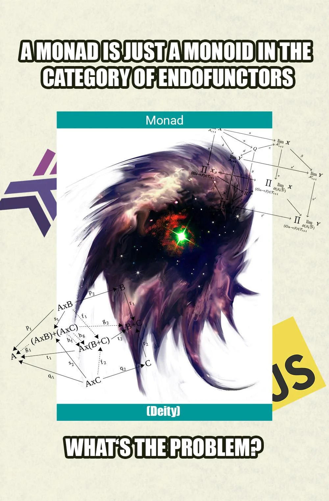

Функциональное программирование в массы!

В результате опроса на знание терминов из функционального программирования выяснилось, что нам с вами стоит напомнить себе базовые понятия. Постарался сделать это на простых примерах понятным языком.
Функтор — это «контейнер», который поддерживает функцию fmap() (устоявшееся
название). Она позволяет применить к каждому элементу внутри контейнера переданную функцию без изменения
исходной структуры.
Иными словами, если у типа есть реализация fmap, то с ним можно работать как с функтором.
На примере Haskell:
fmap (+1) (Just 2) -- Just 3
fmap (+1) [1, 2, 3] -- [2, 3, 4]
Java глобально такую абстракцию реализовать не даёт, есть только конкретные классы с таким поведением.
Приходят на ум очевидные Optional, Stream и CompletableFuture:
Optional<User> user = findUser();
Optional<String> name = user.map(User::getName);
Монада — развитие идеи функторов. Если Optional.map() позволяет модифицировать
содержимое контейнера через функции T -> R, то Optional.flatMap() работает с
функциями T -> Optional<R> и убирает лишнюю вложенность.
Для Optional<Address> findAddress(User user):
Optional<Optional<Address>> address = findUser().map(user -> findAddress(user)); // неудобно
Optional<Address> address = findUser().flatMap(user -> findAddress(user));
Да, Optional и функтор, и монада. Монады, в отличие от функторов, позволяют строить цепочки
вычислений, где каждая следующая функция возвращает значение в контейнере.
Ну и классический пример превосходства функционального подхода, когда разработчику не приходится задумываться о содержимом контейнера:
Optional<String> city = findUser()
.flatMap(this::findAddress)
.map(Address::city);
// vs
User user = findUser();
if (user == null) {
return null;
}
Address address = findAddress(user);
if (address == null) {
return null;
}
return address.city();Каррирование — преобразование функции от многих аргументов в набор вложенных функций, каждая из которых является функцией от одного аргумента. Зачем? За счёт частичного применения функция может быть удобно переиспользована.
В Haskell поддержка нативная:
sum' :: Int -> Int -> Int -- то же, что и Int -> (Int -> Int)
sum' a b = a + b
print (sum' 2 3) -- можно так
print ((sum' 2) 3) -- и так
let addTwo = sum' 2
print (addTwo 10) -- 12В Java имитируем это через функцию, которая возвращает функцию:
Integer.sum(2)(3); // нельзя
Integer.sum(2, 3); // только так
Function<Integer, Function<Integer, Integer>> curriedSum = a -> b -> a + b;
System.out.println(curriedSum.apply(2).apply(3)); // 5
Function<Integer, Integer> addTwo = curriedSum.apply(2);
System.out.println(addTwo.apply(10)); // 12В Kotlin тоже нет каррирования из коробки, но синтаксис имитации приятнее:
fun sum(a: Int, b: Int): Int = a + b
sum(2)(3) // нельзя
sum(2, 3) // только так
val curriedSum: (Int) -> (Int) -> Int = { a -> { b -> a + b } }
println(curriedSum(2)(3)) // 5
val addTwo = curriedSum(2)
println(addTwo(10)) // 12